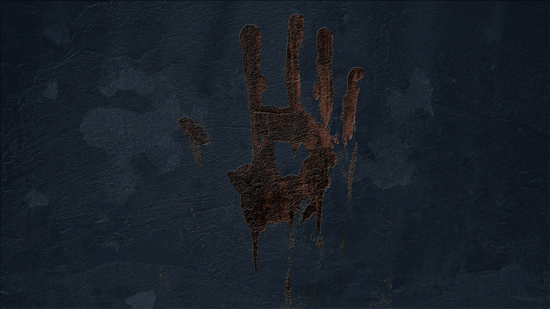
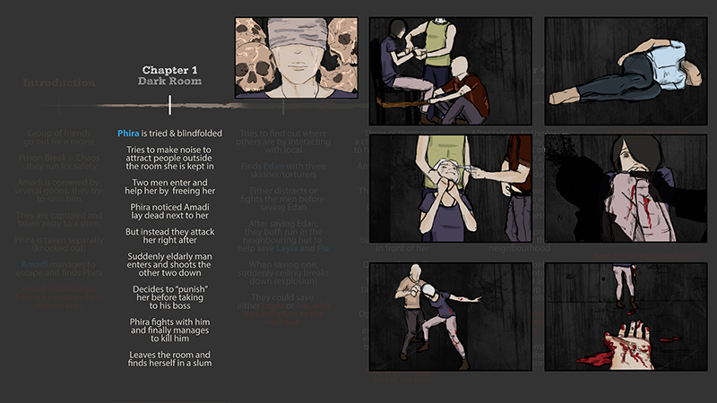
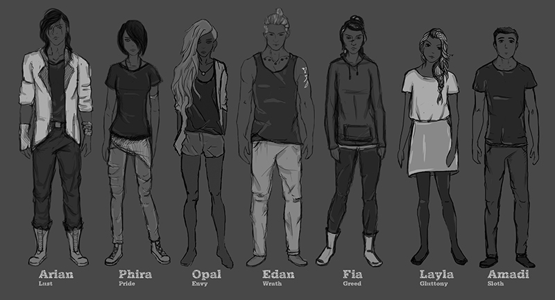
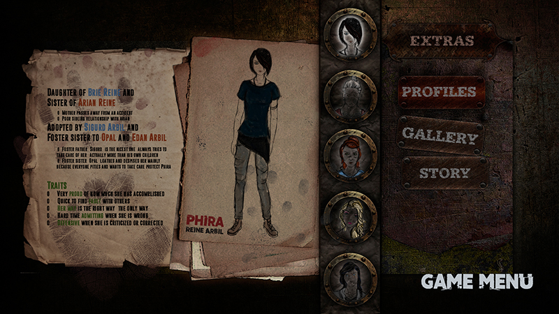
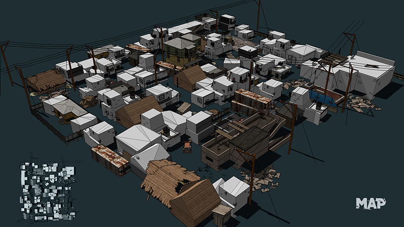

From Roots to Needles
An interactive visual narrative where the audience may test the value of their decision-making when they play the game, and whether they are able to help the main character resolve the problem in the story.
A girl finds herself stranded in a dark room. She cannot understand how and why this happened as she does not remember anything from the previous day. You, as the player, have to try to help character to resolve the problem in order to find the rest of her friends. The goal is to escape without getting caught. Each decision made by you would impact relationships between characters and you may end with a different ending each time. Try not regret your choices.
Nobonita Bhowmik
Being a gaming enthusiast, an avid fan of animated movies in digital art and media, Nobonita Bhowmik aims to create game art, animation and motions graphics.
// Website
// Instagram
// Behance


You, as the player, have to try to help character to resolve the problem in order to find the rest of her friends. The goal is to escape without getting caught.

Short Summary of the Game (one possible ending)

Seven characters personalities are based on the Seven Deadly Sins.

Main Character Description // Game Menu

Map of the shanty town where the story is set in. Each character is placed in different parts of the town.